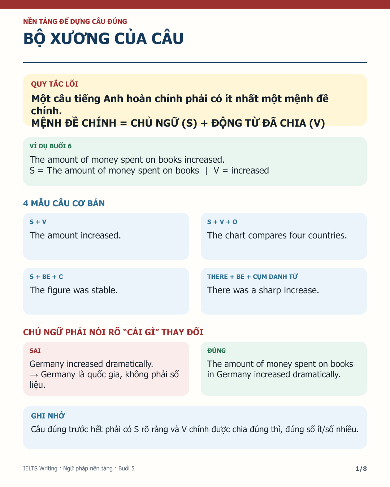
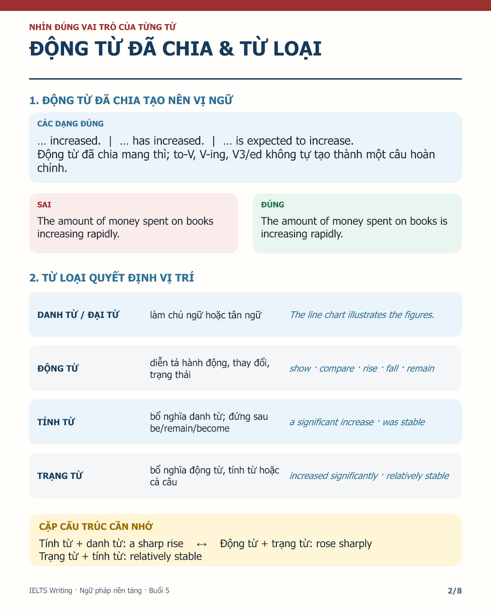
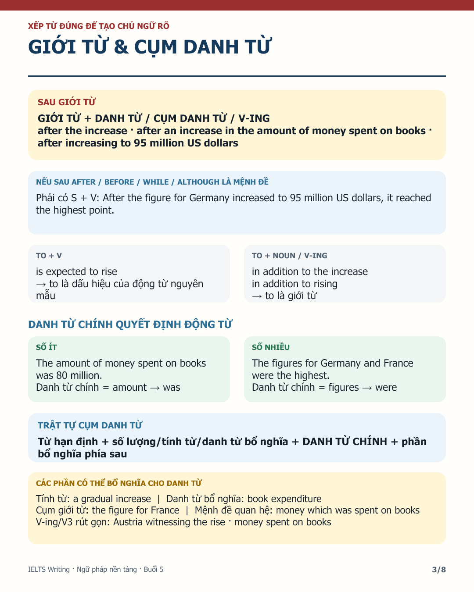
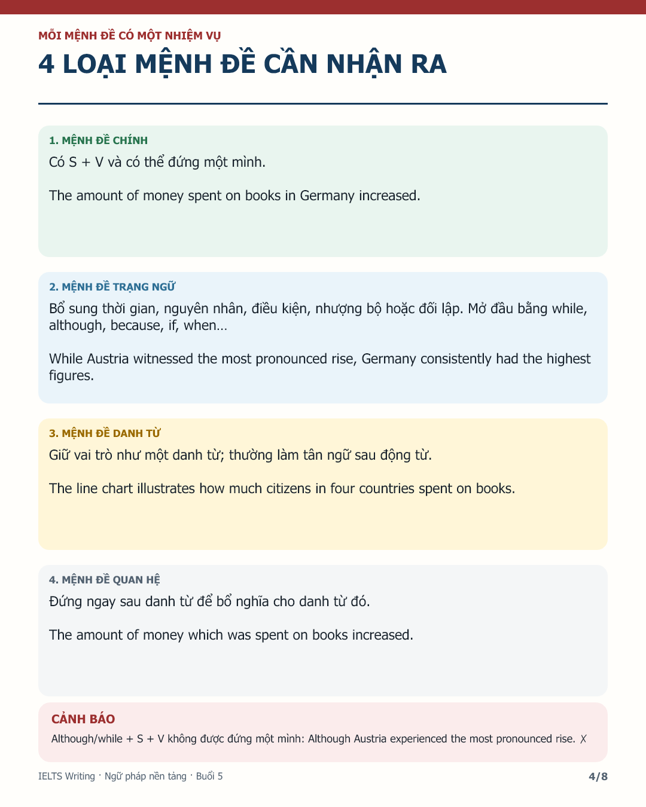
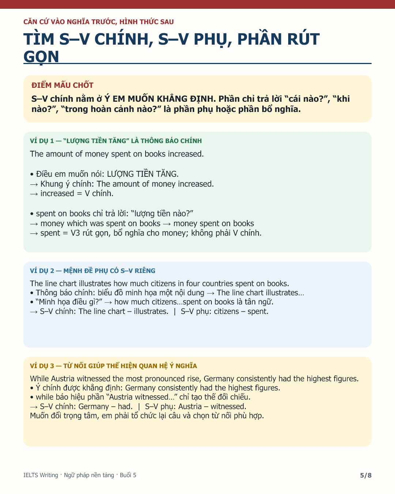
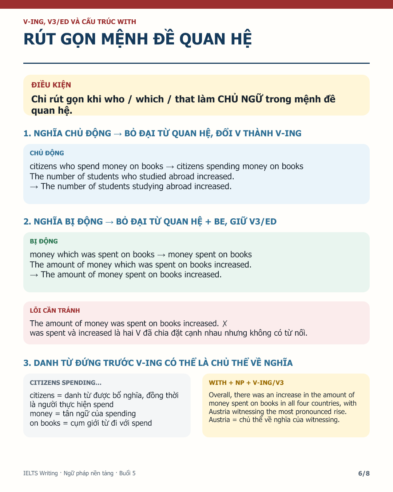
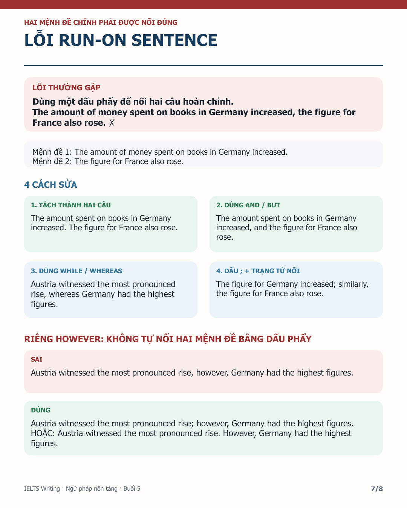
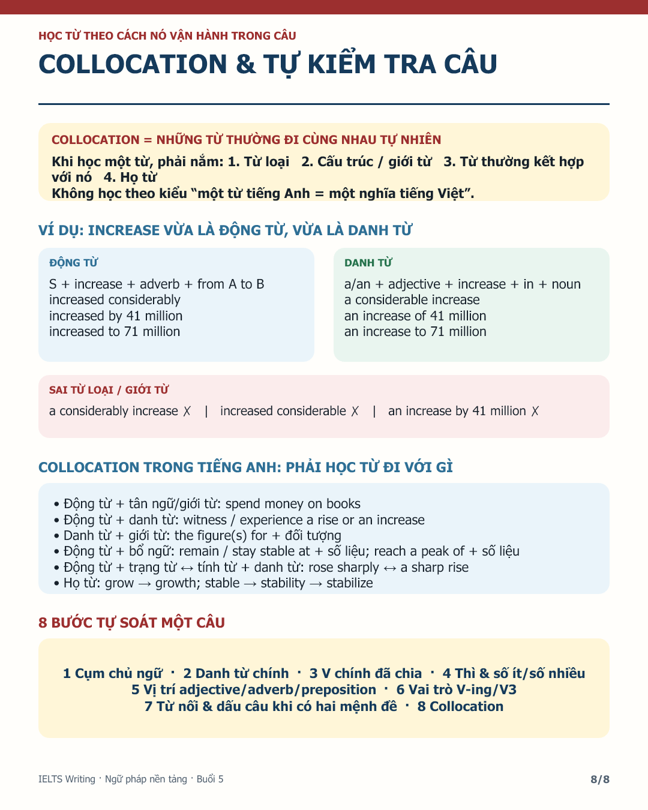

BUỔI HỌC VIẾT SỐ 05
TỔNG QUAN IELTS WRITING TASK 1 + NGỮ PHÁP NỀN TẢNG
BÀI TẬP VỀ NHÀ
- Đọc kỹ bài giảng Tổng quan IELTS Writing Task 1 và cả 8 trang Ngữ pháp nền tảng ở phần dưới — không cần chép tay.
- Hoàn thành phần Luyện tập trên web và đạt từ 8/10 bài kiểm tra cuối (làm lại không giới hạn); nhập đúng họ tên và lớp.
- Máy tự ghi nhận kết quả và thời gian luyện tập — không cần chụp ảnh hay nộp vở. Làm quá nhanh thì chưa được tính.
01 | BÀI GIẢNG TASK 1
◆ YÊU CẦU BẮT BUỘC
✓ Đọc kỹ toàn bộ nội dung bài giảng.
✓ Xem kỹ mọi biểu đồ, bảng số liệu và chú thích.
✓ Sau đó làm phần Luyện tập trên web ngay bên dưới.
Luyện tập trên web
Học từ bằng thẻ, chơi một trò chơi ngắn, làm bài tập lý thuyết có giải thích, rồi tự kiểm tra 10 câu. Đúng từ 8/10 và luyện tập nghiêm túc thì máy tự ghi nhận em đã hoàn thành (họ tên, lớp, điểm, thời gian luyện tập) — em không cần chụp ảnh, quay video hay nộp gì thêm. Làm quá nhanh thì kết quả chưa được tính.
02 | NGỮ PHÁP NỀN TẢNG
Đọc kỹ cả 8 trang theo đúng thứ tự. Không bỏ phần ví dụ và phần ghi nhớ. Không cần chép tay.








03 | GHI NHẬN KẾT QUẢ BUỔI 5
◆ MÁY TỰ GHI NHẬN
Khi thẻ kết quả báo ĐẠT · ĐÃ GHI NHẬN HOÀN THÀNH, em không cần nộp gì thêm.
Nút dưới đây chỉ dùng khi máy báo không gửi được kết quả: em chụp màn hình thẻ kết quả và nộp dự phòng.
NỘP DỰ PHÒNG (CHỈ KHI MÁY KHÔNG GỬI ĐƯỢC)